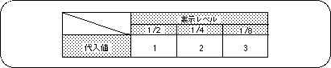
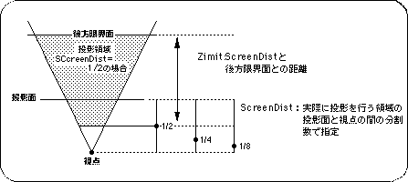
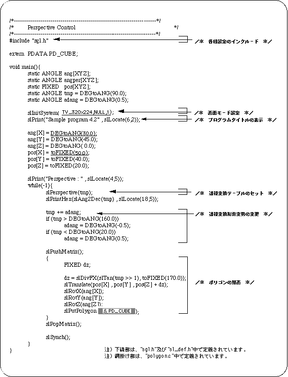
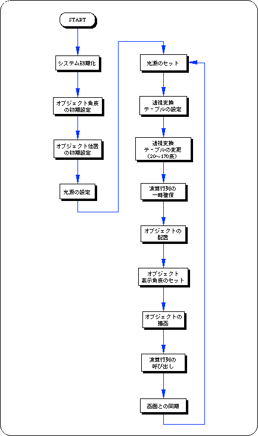

For the parameter, substitute an angle value (10
Figure 4-6 Image differences depending on angle of view

- 2) Display level The
- display level is a parameter that determines how far behind the projection plane is to be projected.
Objects behind the projection plane are also projected onto the projection plane in the same way as the images behind the projection plane.
The display level is set with the function “slZdspLevel”.
The display level is determined by the projection point from the viewpoint and projection plane.
- [void slZdspLevel (Uint16 level);]
- Determines the display level of the viewing volume.
For the parameter, substitute the values in the table below according to the display level.
Table 4-1 Display level substitution value (level)

The figure below shows the display level image model.
Figure 4-7 Display level

Listing 4-1 below shows how the cube looks by placing a cube in the center of the screen and changing the angle of view parameter, which is a perspective parameter, between 20 and 160 degrees.
List 4-1 sample_4_2: Changes in video by perspective

Flow 4-1 sample_4_2: Flow chart of video change by perspective
